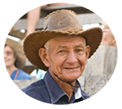

Historia
Auténticamente Costarricense y auténticamente Guanacasteco, Hotel Hacienda Guachipelín
es un destino eco-turístico único en Costa Rica.
Familias, parejas, grupos y
visitantes por un día, encuentran una increíble selección de actividades
divertidas y tours de aventura para disfrutar en Hacienda Guachipelín.
Nuestra
incomparable ubicación al pié del majestuoso y activo Volcán Rincón de la Vieja,
en Guanacaste, Costa Rica. Perteneciendo a la familia Batalla desde hace más de
40 años, nuestra hacienda tradicional de 1400 hectáreas, incluye el exótico
bosque tropical seco que rodea el Parque Nacional Rincón de la Vieja, declarado
Patrimonio de la Humanidad por la UNESCO, parte del Área de Conservación
Guanacaste.
Perfil del autor

Desde 1975, dos generaciones de la familia Batalla han amado y trabajado
la tierra de esta hacienda, manteniendo vivo el legado.
En aquellos años, los caminos eran difíciles o prácticamente inexistentes. Los turistas que venían desde Liberia llegaban hasta bien
entrada la tarde.
Ellos preguntaban si podían quedarse a pasar la noche, para visitar el Parque Nacional y el Volcán el siguiente día. Esto sucedía cada vez más.
Nuestra familia preparó unas pocas habitaciones para huéspedes, y luego tras pocas más.
Hasta que en 1985, finalmente abrimos Hotel Hacienda Guachipelín.